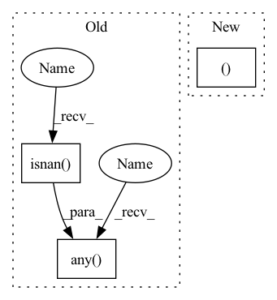

Pattern ID :15588
Before Change
y0 = ys[0]
else:
y0 = jnp.broadcast_to(replace_nans_at_start, ys[0].shape)
cond = jnp.any(jnp.isnan( ys) )
operand = (y0, ts, ys)
ys = lax.cond(
cond,
_linear_interpolation_impl(fill_forward_nans_at_end),After Change
if fill_forward_nans_at_end:
next_ys = fill_forward(next_ys)
_, ys = lax.scan(
_linear_interpolation_forward, (ts[0], y0 ), (ts, ys, next_ts, next_ys)
)
return ys
In pattern: SUPERPATTERN
Frequency: 3
Non-data size: 3
Instances Fragment ID: 52820485
Project Name: patrick-kidger/diffrax
Commit Name: 520f8a03fabece54c8b620b58f8226ee9af45088
Time: 2021-10-29
Author: 33688385+patrick-kidger@users.noreply.github.com
File Name: diffrax/global_interpolation.py
M Class Name: AnonimousClass
N Class Name: AnonimousClass
M Method Name: _linear_interpolation(4)
N Method Name: _linear_interpolation(4)
M Parent Class:
N Parent Class:
M File Name: diffrax/global_interpolation.py
N File Name: diffrax/global_interpolation.py
M Start Line: 248
M End Line: 258
N Start Line: 231
N End Line: 244
Before Change
y0 = ys[0]
else:
y0 = jnp.broadcast_to(replace_nans_at_start, ys[0].shape)
cond = jnp.any(jnp.isnan( ys) )
operand = (y0, ts, ys)
ys = lax.cond(
cond,
_linear_interpolation_impl(fill_forward_nans_at_end),After Change
else:
y0 = jnp.broadcast_to(replace_nans_at_start, ys[0].shape)
_, (next_ts, next_ys ) = lax.scan(
_interpolation_reverse, (ts[-1], ys[-1]), (ts, ys), reverse=True
)
if fill_forward_nans_at_end: Fragment ID: 52820484
Project Name: patrick-kidger/diffrax
Commit Name: 520f8a03fabece54c8b620b58f8226ee9af45088
Time: 2021-10-29
Author: 33688385+patrick-kidger@users.noreply.github.com
File Name: diffrax/global_interpolation.py
M Class Name: AnonimousClass
N Class Name: AnonimousClass
M Method Name: _linear_interpolation(4)
N Method Name: _linear_interpolation(4)
M Parent Class:
N Parent Class:
M File Name: diffrax/global_interpolation.py
N File Name: diffrax/global_interpolation.py
M Start Line: 248
M End Line: 258
N Start Line: 231
N End Line: 244
Before Change
assert type(regData.__getitem__(0)[1]) == torch.Tensor
numLabels = regData.labels.shape[1]
for idx in range(numLabels):
if torch.any(torch.isnan( regData.__getitem__(0)[1][idx]) ) :
print("there is any nan here")
print(torch.max(heatmapData.__getitem__(0)[1][idx]))
assert torch.max(heatmapData.__getitem__(0)[1][idx]) == torch.tensor(0)After Change
heatmapData.height,
heatmapData.width,
)
image, heatmaps, labels = heatmapData[0]
assert image.shape == (3, 384, 384)
assert labels.shape == (34,)
assert heatmaps.shape[1:] == heatmapData.output_shape Fragment ID: 52820482
Project Name: danbider/lightning-pose
Commit Name: 1bf9d266b4650117b9813ea8371e1f345373ccff
Time: 2021-10-13
Author:
File Name: tests/test_new_datasets.py
M Class Name: AnonimousClass
N Class Name: AnonimousClass
M Method Name: test_heatmap_dataset(0)
N Method Name: test_heatmap_dataset(0)
M Parent Class:
N Parent Class:
M File Name: tests/test_new_datasets.py
N File Name: tests/test_new_datasets.py
M Start Line: 19
M End Line: 55
N Start Line: 25
N End Line: 41
Before Change
found = []
for name, val in kwargs.items():
has_nan = np.any(np.isnan( val) )
has_inf = self.check_inf and np.any(np.isinf(val))
if has_inf:
found.append((name, "inf"))
if has_nan:After Change
found = []
for name, value in kwargs.items():
if isinstance(value, (np.ndarray, list )):
found += self.check_array_value(name, np.asarray(value))
elif isinstance(value, dict):
for inner_name, inner_val in value.items(): Fragment ID: 52820478
Project Name: dlr-rm/stable-baselines3
Commit Name: ed8783cb738136d89feb55e5fe373528513231c8
Time: 2023-02-27
Author: antonin.raffin@ensta.org
File Name: stable_baselines3/common/vec_env/vec_check_nan.py
M Class Name: VecCheckNan
N Class Name: VecCheckNan
M Method Name: _check_val(2)
N Method Name: _check_val(2)
M Parent Class: VecEnvWrapper
N Parent Class: VecEnvWrapper
M File Name: stable_baselines3/common/vec_env/vec_check_nan.py
N File Name: stable_baselines3/common/vec_env/vec_check_nan.py
M Start Line: 52
M End Line: 61
N Start Line: 73
N End Line: 86